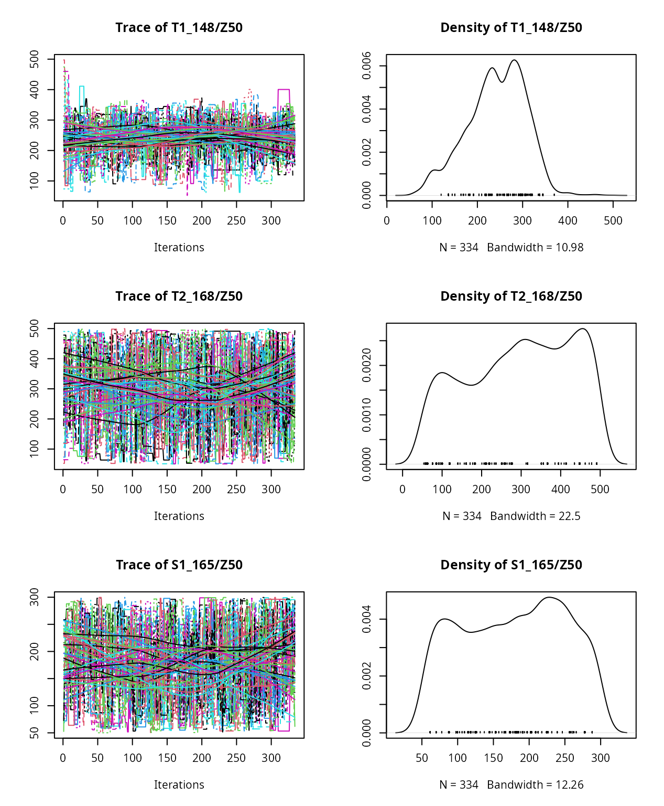
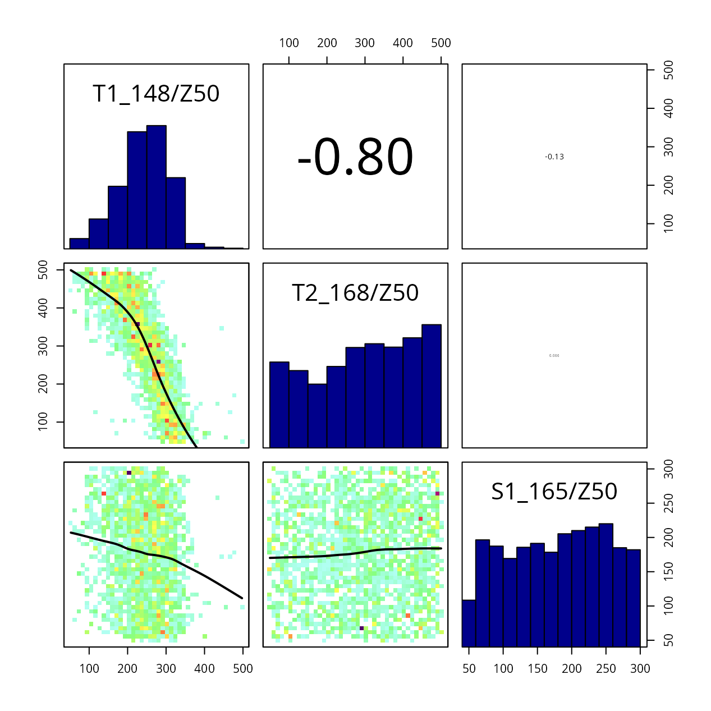
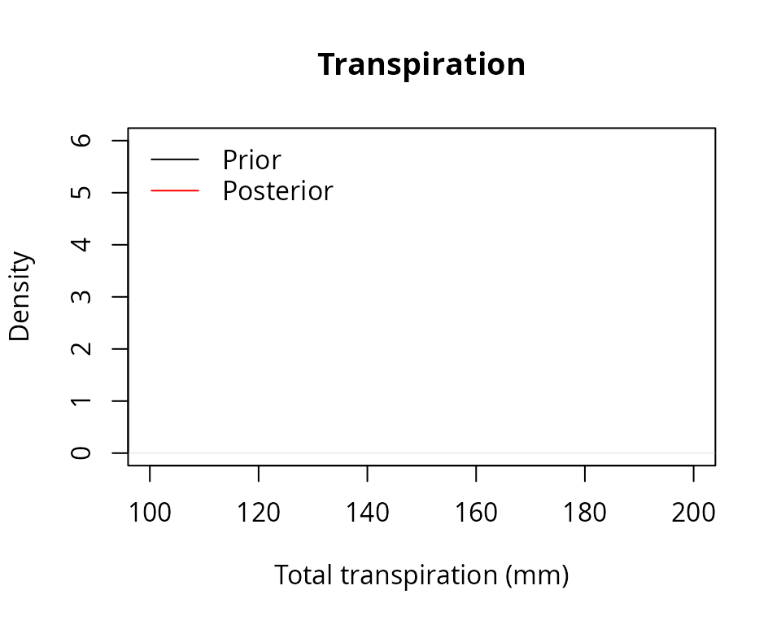

Sensitivity analysis and calibration
Miquel De Caceres
2022-01-14
Source:vignettes/modelanalysis/SensitivityCalibration.Rmd
SensitivityCalibration.RmdAbout this vignette
The present document shows how to conduct a sensitivity analyses and calibration exercises on the simulation models included in package medfate. The document is written assuming that the user is familiarized with the basic water balance model (i.e. function spwb). The aim of the exercises presented here are:
- To determine which
spwb()model parameters are more influential in determining stand transpiration and plant drought stress. - To determine which model parameters are more influential to determine model fit to soil water content dynamics.
- To reduce the uncertainty in parameters determining fine root distribution, given an observed data set of soil water content dynamics.
As an example data set we will use here the same data sets provided to illustrate simulation functions in medfate. We begin by loading the package and the example forest data:
## This is medfate [ver. 2.5.0]
data(exampleforestMED)
exampleforestMED## $ID
## [1] "1"
##
## $patchsize
## [1] 10000
##
## $treeData
## Species N DBH Height Z50 Z95
## 1 148 168 37.55 800 400 2000
## 2 168 384 14.60 660 400 2000
##
## $shrubData
## Species Cover Height Z50 Z95
## 1 165 3.75 80 300 1500
##
## $herbCover
## [1] 10
##
## $herbHeight
## [1] 20
##
## attr(,"class")
## [1] "forest" "list"We also load the species parameter table and the example weather dataset:
Preparing model inputs
We will focus on three species/cohorts of the example data set:
PH_coh = paste0("T1_", SpParamsMED$SpIndex[SpParamsMED$Name=="Pinus halepensis"])
QI_coh = paste0("T2_", SpParamsMED$SpIndex[SpParamsMED$Name=="Quercus ilex"])
QC_coh = paste0("S1_", SpParamsMED$SpIndex[SpParamsMED$Name=="Quercus coccifera"])The data set consists of a forest with two tree species (Pinus halepensis/T1_148 and Quercus ilex/T2_168) and one shrub species (Quercus coccifera/S1_165 or Kermes oak).
We first initialize a soil with four layers (default values of texture, bulk density and rock content) and the species input parameters for simulation function spwb():
examplesoil1 = soil(defaultSoilParams(4))
x1 = forest2spwbInput(exampleforestMED,examplesoil1, SpParamsMED, control = defaultControl())Although it is not necessary, we make an initial call to the model (spwb()) with the default parameter settings:
S1<-spwb(x1, examplemeteo, latitude = 41.82592, elevation = 100)## Initial soil water content (mm): 291.257
## Initial snowpack content (mm): 0
## Performing daily simulations
##
## [Year 2001]:....................................
##
## Final soil water content (mm): 269.1
## Final snowpack content (mm): 0
## Change in soil water content (mm): -22.1567
## Soil water balance result (mm): -22.1567
## Change in snowpack water content (mm): 0
## Snowpack water balance result (mm): 7.10543e-15
## Water balance components:
## Precipitation (mm) 513
## Rain (mm) 462 Snow (mm) 51
## Interception (mm) 98 Net rainfall (mm) 364
## Infiltration (mm) 406 Runoff (mm) 9 Deep drainage (mm) 68
## Soil evaporation (mm) 25 Transpiration (mm) 334Function spwb() will be implicitly called multiple times in the sensitivity analyses and calibration analyses that we will illustrate below.
Sensitivity analysis
Introduction and input factors
Model sensitivity analyses are used to investigate how variation in the output of a numerical model can be attributed to variations of its input factors. Input factors are elements that can be changed before model execution and may affect its output. They can be model parameters, initial values of state variables, boundary conditions or the input forcing data (Pianosi et al. 2016).
According to Saltelli et al. (2016), there are three main purposes of sensitivity analyses:
- Ranking aims at generating the ranking of the input factors according to their relative contribution to the output variability.
- Screening aims at identifying the input factors, if any, which have a negligible influence on the output variability.
- Mapping aims at determining the region of the input variability space that produces significant output values.
Here we will mostly interested in ranking parameters according to different objectives. We will take as input factors three plant traits (leaf area index, fine root distribution and the water potential corresponding to a reduction in plant conductance) in the three plant cohorts (species), and two soil factors (the rock fragment content of soil layer 1 and 2). In total, eleven model parameters will be studied. The following shows the initial values for plant trait parameters:
x1$above$LAI_live## [1] 0.96734365 0.93111690 0.03928201
x1$below$Z50## [1] 400 400 300
x1$paramsTransp$Psi_Extract## [1] -2.600000 -3.001667 -3.455000
x1$soil$rfc[1:2]## [1] 25 45In the following code we define a vector of parameter names (using naming rules of function modifyInputParams()) as well as the input variability space, defined by the minimum and maximum parameter values:
#Parameter names of interest
parNames = c(paste0(PH_coh,"/LAI_live"), paste0(QI_coh,"/LAI_live"), paste0(QC_coh,"/LAI_live"),
paste0(PH_coh,"/Z50"), paste0(QI_coh,"/Z50"), paste0(QC_coh,"/Z50"),
paste0(PH_coh,"/Psi_Extract"), paste0(QI_coh,"/Psi_Extract"), paste0(QC_coh,"/Psi_Extract"),
"rfc@1", "rfc@2")
parNames## [1] "T1_148/LAI_live" "T2_168/LAI_live" "S1_165/LAI_live"
## [4] "T1_148/Z50" "T2_168/Z50" "S1_165/Z50"
## [7] "T1_148/Psi_Extract" "T2_168/Psi_Extract" "S1_165/Psi_Extract"
## [10] "rfc@1" "rfc@2"Model output functions
In sensitivity analyses, model output is summarized into a single variable whose variation is to be analyzed. Pianosi et al. (2016) distinguish two types of model output functions:
- objective functions (also called loss or cost functions), which are measures of model performance calculated by comparison of modelled and observed variables.
- prediction functions, which are scalar values that are provided to the model-user for their practical use, and that can be computed even in the absence of observations.
Here we will use examples of both kinds. First, we define a function that, given a simulation result, calculates total transpiration (mm) over the simulated period (one year):
sf_transp<-function(x) {sum(x$WaterBalance$Transpiration, na.rm=TRUE)}
sf_transp(S1)## [1] 334.4477Another prediction function can focus on plant drought stress. We define a function that, given a simulation result, calculates the average drought stress of plants (measured using the water stress index) over the simulated period:
sf_stress<-function(x) {
lai <- x$spwbInput$above$LAI_live
lai_p <- lai/sum(lai)
stress <- droughtStress(x, index="WSI", draw = F)
mean(sweep(stress,2, lai_p, "*"), na.rm=T)
}
sf_stress(S1)## [1] 5.403953Sensitivity analysis requires model output functions whose parameters are the input factors to be studied. \[\begin{equation}
y = g(\mathbf{x}) = g(x_1, x_2, \dots, x_n)
\end{equation}\] where \(y\) is the output, \(g\) is the output function and \(\mathbf{x} = \{x_1, x_2, \dots, x_n\}\) is the vector of parameter input factors. Functions of_transp and of_stress take simulation results as input, not values of input factors. Instead, we need to define functions that take soil and plant trait values as input, run the soil plant water balance model and return the desired prediction or performance statistic. These functions can be generated using the function factory optimization_function(). The following code defines one of such functions focusing on total transpiration:
of_transp<-optimization_function(parNames = parNames,
x = x1,
meteo = examplemeteo,
latitude = 41.82592, elevation = 100,
summary_function = sf_transp)Note that we provided all the data needed for simulations as input to optimization_function(), as well as the names of the parameters to study and the function sf_transp. The resulting object of_transp is a function itself, which we can call with parameter values (or sets of parameter values) as input:
of_transp(parMin)## [1] 55.93925
of_transp(parMax)## [1] 304.0196It is important to understand the steps that are done when we call of_transp():
- The function
of_transp()callsspwb()using all the parameters specified in its construction (i.e. in the call to the function factory), except for the input factors indicated inparNames, which are specified as input at the time of callingof_transp(). - The result of soil plant water balance is then passed to function
sf_transp()and the output of this last function is returned as output ofof_transp().
We can build a similar model output function, in this case focusing on plant stress (note that the only difference in the call to the factory is in the specification of sf_stress as summary function, instead of sf_transp).
of_stress<-optimization_function(parNames = parNames,
x = x1,
meteo = examplemeteo,
latitude = 41.82592, elevation = 100,
summary_function = sf_stress)
of_stress(parMin)## [1] 0.6245495
of_stress(parMax)## [1] 118.5394As mentioned above, another kind of output function can be the evaluation of model performance. Here we will assume that performance in terms of predictability of soil water content is desired; and use a data set of ‘observed’ values (actually simulated values with gaussian error) as reference:
## SWC ETR E_T1_148 E_T2_168 FMC_T1_148 FMC_T2_168
## 2001-01-01 0.3050679 2.4246078 0.1812395 0.1550403 125.1599 92.74113
## 2001-01-02 0.3009718 2.3636359 0.3697146 0.2993662 125.7916 93.33293
## 2001-01-03 0.3006070 0.5704773 0.2725478 0.3353301 126.4249 93.08241
## 2001-01-04 0.3046499 1.9828479 0.0776677 0.1825556 126.9492 93.14510
## 2001-01-05 0.3020621 2.2635585 0.3498398 0.2408503 125.4595 93.18273
## 2001-01-06 0.3057368 2.7842478 0.2507703 0.2661803 126.0743 92.93839
## BAI_T1_148 BAI_T2_168
## 2001-01-01 0.004774430 -0.0006472257
## 2001-01-02 -0.006317729 0.0008551534
## 2001-01-03 -0.005354615 -0.0009369536
## 2001-01-04 -0.006874188 0.0003163094
## 2001-01-05 -0.002327924 0.0010625082
## 2001-01-06 0.005172044 -0.0009123389where soil water content dynamics is in column SWC. The model fit to observed data can be measured using the Nash-Sutcliffe coefficient, which we calculate for the initial run using function evaluation_metric():
evaluation_metric(S1, measuredData = exampleobs, type = "SWC",
metric = "NSE")## [1] -4.271813A call to evaluation_metric() provides the coefficient given a model simulation result, but is not a model output function as we defined above. Analogously to the measures of total transpiration and average plant stress, we can use a function factory to define a model output function that takes input factors as inputs, runs the model and performs the evaluation:
of_eval<-optimization_evaluation_function(parNames = parNames,
x = x1,
meteo = examplemeteo, latitude = 41.82592, elevation = 100,
measuredData = exampleobs, type = "SWC",
metric = "NSE")Function of_eval() stores internally both the data needed for conducting simulations and the data needed for evaluating simulation results, so that we only need to provide values for the input factors:
of_eval(parMin)## [1] 0.8362506
of_eval(parMax)## [1] -80.27107Global sensitivity analyses
Sensitivity analysis is either referred to as local or global, depending on variation of input factors is studied with respect to some initial parameter set (local) or the whole space of input factors is taken into account (global). Here we will conduct global sensitivity analyses using package sensitivity (Ioss et al. 2020):
library(sensitivity)## Registered S3 method overwritten by 'sensitivity':
## method from
## print.src dplyrThis package provides a suite of approaches to global sensitivity analysis. Among them, we will follow the Elementary Effect Test implemented in function morris(). We call this function to analyze sensitivity of total transpiration simulated by spwb() to input factors (500 runs are done, so be patient):
sa_transp <- morris(of_transp, parNames, r = 50,
design = list(type = "oat", levels = 10, grid.jump = 3),
binf = parMin, bsup = parMax, scale=TRUE, verbose=FALSE)Apart from indicating the sampling design to sample the input factor space, the call to morris() includes the response model function (in our case of_transp), the parameter names and parameter value boundaries (i.e. parMin and parMax).
print(sa_transp)##
## Call:
## morris(model = of_transp, factors = parNames, r = 50, design = list(type = "oat", levels = 10, grid.jump = 3), binf = parMin, bsup = parMax, scale = TRUE, verbose = FALSE)
##
## Model runs: 600
## mu mu.star sigma
## T1_148/LAI_live 41.695844 73.278532 95.755791
## T2_168/LAI_live 56.422381 63.772985 87.592821
## S1_165/LAI_live 49.369541 56.839362 74.554091
## T1_148/Z50 -25.892782 37.321475 37.940898
## T2_168/Z50 -20.612648 33.114674 36.078465
## S1_165/Z50 -15.719339 17.455636 17.775487
## T1_148/Psi_Extract -10.654719 10.654719 7.965592
## T2_168/Psi_Extract -9.126678 9.126678 6.805668
## S1_165/Psi_Extract -4.186104 4.186104 5.018818
## rfc@1 -31.759491 31.759491 25.388151
## rfc@2 -39.013212 39.159474 22.491278mu.star values inform about the mean of elementary effects of each \(i\) factor and can be used to rank all the input factors, whereas sigma inform about the degree of interaction of the \(i\)-th factor with others. According to the result of this sensitivity analysis, leaf area index (LAI_live) parameters are the most relevant to determine total transpiration, much more than fine root distribution (Z50), the rock fragment content in the soil and the water potentials corresponding to whole-plant conductance reduction (i.e. Psi_Extract).
We can run the same sensitivity analysis but focusing on the input factors relevant for predicted plant drought stress (i.e. using of_stress as model output function):
sa_stress <- morris(of_stress, parNames, r = 50,
design = list(type = "oat", levels = 10, grid.jump = 3),
binf = parMin, bsup = parMax, scale=TRUE, verbose=FALSE)
print(sa_stress)##
## Call:
## morris(model = of_stress, factors = parNames, r = 50, design = list(type = "oat", levels = 10, grid.jump = 3), binf = parMin, bsup = parMax, scale = TRUE, verbose = FALSE)
##
## Model runs: 600
## mu mu.star sigma
## T1_148/LAI_live 199.35556 199.35556 107.18034
## T2_168/LAI_live 207.03137 207.03137 108.70857
## S1_165/LAI_live 206.46076 206.46076 95.66235
## T1_148/Z50 42.39128 44.95613 36.06455
## T2_168/Z50 30.21549 40.92742 49.96018
## S1_165/Z50 45.60078 55.86216 54.30222
## T1_148/Psi_Extract -115.92175 115.92175 72.63048
## T2_168/Psi_Extract -102.81834 102.81834 86.42349
## S1_165/Psi_Extract -81.60813 81.60813 66.47423
## rfc@1 40.82863 40.82863 36.43407
## rfc@2 41.27562 41.27562 30.05439Again, LAI values parameters are the most relevant, but closely followed by the water potentials corresponding to whole-plant conductance reduction (i.e. Psi_Extract), which appear as more relevant than parameters of fine root distribution (Z50) and rock fragment content (rfc).

Finally, we can study the contribution of input factors to model performance in terms of soil water content dynamics (i.e. using of_eval as model output function):
sa_eval <- morris(of_eval, parNames, r = 50,
design = list(type = "oat", levels = 10, grid.jump = 3),
binf = parMin, bsup = parMax, scale=TRUE, verbose=FALSE)
print(sa_eval)##
## Call:
## morris(model = of_eval, factors = parNames, r = 50, design = list(type = "oat", levels = 10, grid.jump = 3), binf = parMin, bsup = parMax, scale = TRUE, verbose = FALSE)
##
## Model runs: 600
## mu mu.star sigma
## T1_148/LAI_live -52.887208 54.250359 68.908455
## T2_168/LAI_live -59.261226 61.408097 60.753790
## S1_165/LAI_live -43.873847 43.873847 47.805523
## T1_148/Z50 82.228184 82.228184 71.314972
## T2_168/Z50 70.517752 70.517752 76.977215
## S1_165/Z50 45.681498 45.681498 54.744603
## T1_148/Psi_Extract 4.893840 4.893840 8.069666
## T2_168/Psi_Extract 3.468864 3.468864 6.618464
## S1_165/Psi_Extract 1.522892 1.522892 3.705194
## rfc@1 -51.932412 51.932412 39.179119
## rfc@2 0.000000 0.000000 0.000000Contrary to the previous cases, the contribution of LAI parameters is similar to that of parameters of fine root distribution (Z50), which appear as more relevant than the water potentials corresponding to whole-plant conductance reduction (i.e. Psi_Extract).

Calibration
By model calibration we mean here the process of finding suitable parameter values (or suitable parameter distributions) given a set of observations. Hence, the idea is to optimize the correspondence between model predictions and observations by changing model parameter values.
Defining parameter space and objective function
To simplify our analysis and avoid problems of parameter identifiability, we focus here on the calibration of parameter Z50 of fine root distribution. Below we redefine vectors parNames, parMin, and parMax; and we specify a vector of initial values.
#Parameter names of interest
parNames = c(paste0(PH_coh,"/Z50"), paste0(QI_coh,"/Z50"), paste0(QC_coh,"/Z50"))
#Parameter minimum and maximum values
parMin = c(100,100,100)
parMax = c(1000,1000,1000)
parIni = x1$below$Z50In order to run calibration analyses we need to define an objective function. Many evaluation metrics could be used but it is common practice to use likelihood functions . We can use the function factory optimization_evaluation_function and the ‘observed’ data to this aim, but in this case we specify a log-likelihood with Gaussian error as the evaluation metric for of_eval().
of_eval<-optimization_evaluation_function(parNames = parNames,
x = x1,
meteo = examplemeteo, latitude = 41.82592, elevation = 100,
measuredData = exampleobs, type = "SWC",
metric = "loglikelihood")Calibration by gradient search
Model calibration can be performed using a broad range of approaches. Many of them - including simulated annealing, genetic algorithms, gradient methods, etc. - focus on the maximization or minimization of the objective function. To illustrate this common approach, we will use function optim from package stats, which provides several optimization methods. In particular we will use “L-BFGS-B”, which is the “BFGS” quasi-Newton method published by Broyden, Fletcher, Goldfarb and Shanno, modified by the inclusion of minimum and maximum boundaries. By default, function optim performs the minimization of the objective function (here of_eval), but we can specify a negative value for control parameter fnscale to turn the process into a maximization of maximum likelihood:
opt_cal = optim(parIni, of_eval, method = "L-BFGS-B",
control = list(fnscale = -1), verbose = FALSE)The calibration result is the following:
print(opt_cal)## $par
## [1] 802.0192 797.0539 304.6082
##
## $value
## [1] 1342.41
##
## $counts
## function gradient
## 9 9
##
## $convergence
## [1] 0
##
## $message
## [1] "CONVERGENCE: REL_REDUCTION_OF_F <= FACTR*EPSMCH"Note that the optimized parameters are close to those of Z50 in the original x1.
cbind( x1$below[,"Z50", drop = FALSE], opt_cal$par)## Z50 opt_cal$par
## T1_148 400 802.0192
## T2_168 400 797.0539
## S1_165 300 304.6082This occurs because these default values were used to generate the ‘observed’ data in exampleobs, which contains a small amount of non-systematic error.
Bayesian calibration
As an example of a more sophisticated model calibration, we will conduct a Bayesian calibration analysis using package BayesianTools (Hartig et al. 2019):
In a Bayesian analysis one evaluates how the uncertainty in model parameters is changed (hopefully reduced) after observing some data, because observed values do not have the same likelihood under all regions of the parameter space. For a Bayesian analysis we need to specify a (log)likelihood function and the prior distribution (i.e. the initial uncertainty) of the input factors. The central object in the BayesianTools package is the BayesianSetup. This class, created by calls to createBayesianSetup(), contains the information about the model to be fit (likelihood), and the priors for model parameters. In absence of previous data, we specify a uniform distribution between the minimum and maximum values, which in the BayesianTools package can be done using function createUniformPrior():
prior <- createUniformPrior(parMin, parMax, parIni)
mcmc_setup <- createBayesianSetup(likelihood = of_eval,
prior = prior,
names = parNames)Function createBayesianSetup() automatically creates the posterior and various convenience functions for the Markov Chain Monte Carlo (MCMC) samplers. The runMCMC() function is the main wrapper for all other implemented MCMC functions. Here we call it with three chains of 3000 iterations each.
mcmc_out <- runMCMC(
bayesianSetup = mcmc_setup,
sampler = "DEzs",
settings = list(iterations = 1000, nrChains = 9))By default runMCMC() uses parallel computation, but the calibration process is nevertheless rather slow.
A summary function is provided to inspect convergence results and correlation between parameters:
summary(mcmc_out)## # # # # # # # # # # # # # # # # # # # # # # # # #
## ## MCMC chain summary ##
## # # # # # # # # # # # # # # # # # # # # # # # # #
##
## # MCMC sampler: DEzs
## # Nr. Chains: 27
## # Iterations per chain: 334
## # Rejection rate: 0.823
## # Effective sample size: 465
## # Runtime: 1398.092 sec.
##
## # Parameters
## psf MAP 2.5% median 97.5%
## T1_148/Z50 1.092 795.459 627.102 822.533 987.626
## T2_168/Z50 1.103 772.777 625.988 759.137 990.445
## S1_165/Z50 1.063 845.914 126.483 563.390 972.503
##
## ## DIC: -3704.902
## ## Convergence
## Gelman Rubin multivariate psrf: 1.127
##
## ## Correlations
## T1_148/Z50 T2_168/Z50 S1_165/Z50
## T1_148/Z50 1.000 -0.627 -0.091
## T2_168/Z50 -0.627 1.000 -0.060
## S1_165/Z50 -0.091 -0.060 1.000According to the Gelman-Rubin diagnostic, the convergence can be accepted because the multivariate potential scale reduction factor was ≤ 1.1. We can plot the Markov Chains and the posterior density distribution of parameters that they generate using:
plot(mcmc_out) We can also plot the marginal prior and posterior density distributions for each parameter. In this case, we see a similar Z50 distribution for the two trees, which is more informative than the prior distribution. In contrast, the posterior distribution of Z50 for the kermes oak remains as uncertain as the prior one. This happens because the LAI value of kermes oak is low, so that it has small influence on soil water dynamics regardless of its root distribution.
marginalPlot(mcmc_out, prior = T)
Plots can also be produced to display the correlation between parameter values.
correlationPlot(mcmc_out) Here it can be observed the large correlation between Z50 of the two tree cohorts. Since their LAI values are similar, a similar effect on soil water depletion can be obtained to some extent by exchanging their fine root distribution.
Posterior model prediction distributions can be obtained if we take samples from the Markov chains and use them to perform simulations (here we use sample size of 99 but a larger value is preferred).
s = getSample(mcmc_out, numSamples = 99)## Warning: Due to internal chains, numSamples was rounded to the next number
## divisble by the number of chains.
## Warning: Due to internal chains, numSamples was rounded to the next number
## divisble by the number of chains.
## Warning: Due to internal chains, numSamples was rounded to the next number
## divisble by the number of chains.
## Warning: Due to internal chains, numSamples was rounded to the next number
## divisble by the number of chains.
## Warning: Due to internal chains, numSamples was rounded to the next number
## divisble by the number of chains.
## Warning: Due to internal chains, numSamples was rounded to the next number
## divisble by the number of chains.
## Warning: Due to internal chains, numSamples was rounded to the next number
## divisble by the number of chains.
## Warning: Due to internal chains, numSamples was rounded to the next number
## divisble by the number of chains.
## Warning: Due to internal chains, numSamples was rounded to the next number
## divisble by the number of chains.
head(s)## T1_148/Z50 T2_168/Z50 S1_165/Z50
## [1,] 435.8300 956.8087 850.6833
## [2,] 521.1817 427.1025 583.1277
## [3,] 487.6887 489.8914 760.1992
## [4,] 333.5770 147.0726 750.8414
## [5,] 627.1020 516.7284 698.4488
## [6,] 552.5900 552.8371 178.9589To this aim, medfate includes function multiple_runs() that allows running a simulation model with a matrix of parameter values. For example, the following code runs spwb() with all combinations of fine root distribution specified in s.
MS = multiple_runs(s, x = x1, meteo = examplemeteo,
latitude = 41.82592, elevation = 100, verbose = FALSE)Function multiple_runs() determines the model to be called inspecting the class of x (here x1 is a spwbInput). Once we have conducted the simulations we can inspect the posterior distribution of several prediction variables, for example total transpiration:
plot(density(unlist(lapply(MS, sf_transp))), main = "Posterior transpiration",
xlab = "Total transpiration (mm)")
or average plant drought stress:
plot(density(unlist(lapply(MS, sf_stress))),
xlab = "Average plant stress", main="Posterior stress")
Finally, we can use object prior to generate another sample under the prior parameter distribution, perform simulations:
s_prior = prior$sampler(99)
colnames(s_prior)<- parNames
MS_prior = multiple_runs(s_prior, x = x1, meteo = examplemeteo,
latitude = 41.82592, elevation = 100, verbose = FALSE)and compare the prior prediction uncertainty with the posterior prediction uncertainty for the same output variables:
plot(density(unlist(lapply(MS_prior, sf_transp))), main = "Transpiration",
xlab = "Total transpiration (mm)",
xlim = c(320,345), ylim = c(0,0.5))
lines(density(unlist(lapply(MS, sf_transp))), col = "red")
legend("topleft", legend = c("Prior", "Posterior"),
col = c("black", "red"), lty=1, bty="n")
plot(density(unlist(lapply(MS_prior, sf_stress))), main = "Plant stress",
xlab = "Average plant stress",
xlim = c(0,30), ylim = c(0,0.3))
lines(density(unlist(lapply(MS, sf_stress))), col = "red")
legend("topleft", legend = c("Prior", "Posterior"), col = c("black", "red"), lty=1, bty="n")
References
- Pianosi, F., Beven, K., Freer, J., Hall, J.W., Rougier, J., Stephenson, D.B., Wagener, T., 2016. Sensitivity analysis of environmental models: A systematic review with practical workflow. Environ. Model. Softw. 79, 214–232. https://doi.org/10.1016/j.envsoft.2016.02.008
- Bertrand Iooss, Sebastien Da Veiga, Alexandre Janon, Gilles Pujol, with contributions from Baptiste Broto, Khalid Boumhaout, Thibault Delage, Reda El Amri, Jana Fruth, Laurent Gilquin, Joseph Guillaume, Loic Le Gratiet, Paul Lemaitre, Amandine Marrel, Anouar Meynaoui, Barry L. Nelson, Filippo Monari, Roelof Oomen, Oldrich Rakovec, Bernardo Ramos, Olivier Roustant, Eunhye Song, Jeremy Staum, Roman Sueur, Taieb Touati and Frank Weber (2020). sensitivity: Global Sensitivity Analysis of Model Outputs. R package version 1.23.1. https://CRAN.R-project.org/package=sensitivity
- Florian Hartig, Francesco Minunno and Stefan Paul (2019). BayesianTools: General-Purpose MCMC and SMC Samplers and Tools for Bayesian Statistics. R package version 0.1.7. https://CRAN.R-project.org/package=BayesianTools
- Saltelli, A., Ratto, M., Andres, T., Campolongo, F., Cariboni, J., Gatelli, D., Saisana, M., Tarantola, S., 2008. Global Sensitivity Analysis. The Primer. Wiley.